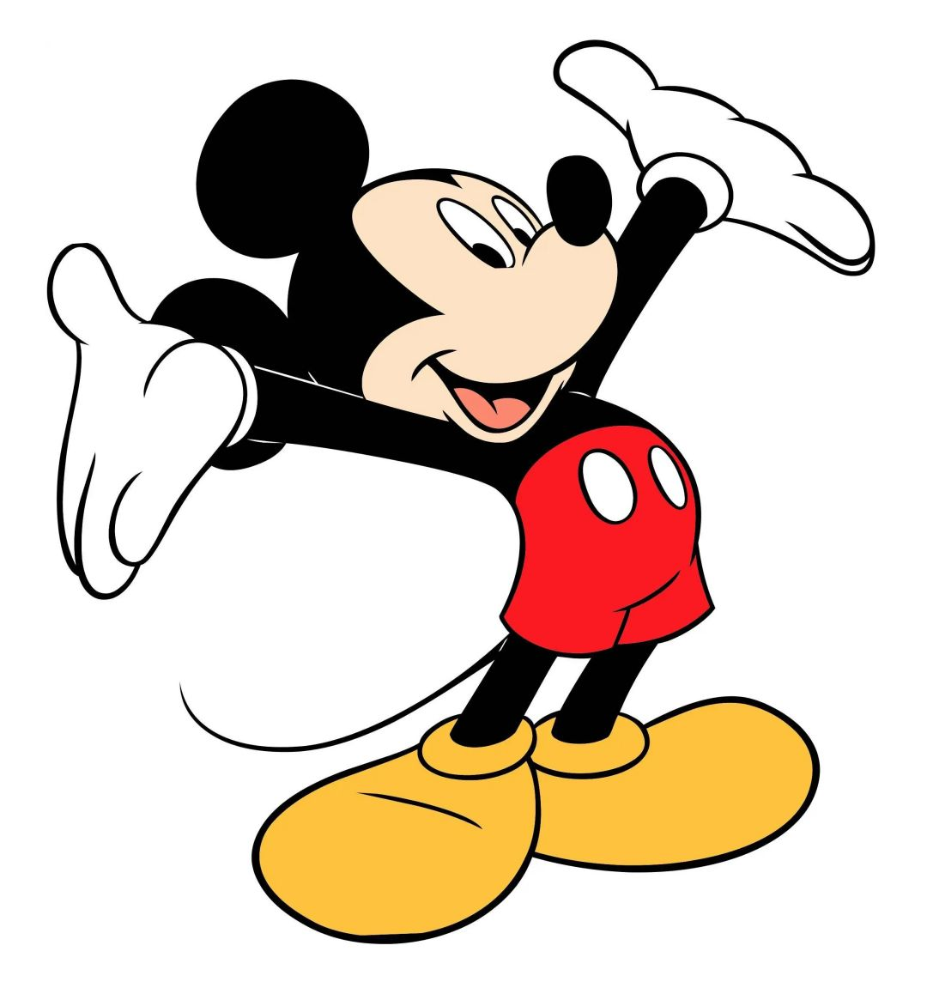

|  | 回到首页米奇老鼠（英文名称：Mickey Mouse），迪士尼代表角色形象，是一只有着圆滚滚的大脑袋、圆滚滚的大耳朵、梨形的身体与像橡胶软管一样柔软、没有明显的关节、可以自由拉伸仿佛没有骨骼的四肢的小老鼠。他以随和，乐观，活跃，充满奇思妙想的性格广受世界各地的观众的欢迎。他总是吹着口哨，哼着小曲，蹦蹦跳跳，充满活力。尽管是个成年角色，但他保留了孩童的好奇、快乐，有点小调皮，并不总是很守规矩或很有礼貌，偶尔还有些贪玩，有点懒散，耐性不足，冲动而急躁，丢三落四，脾气颇为火爆，甚至会有些傲僈，有时会语出伤人，但过后又懊悔不已，想尽办法弥补。他颇富正义感，好打抱不平，常常会因此而不自量力，深陷麻烦中，但又总能凭借智慧成功地摆脱麻烦，圆满地解决问题。 |